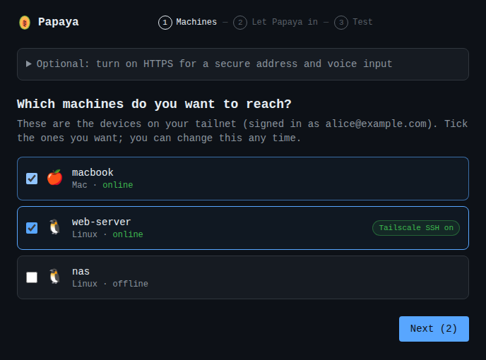

Papaya puts your shells and coding agents on all your machines in a web terminal you can open from any device on your Tailscale network. Start an agent on your desktop and check on it from your phone. Nothing is exposed to the internet.
$ docker run -d --name papaya --restart unless-stopped \ -v papaya-data:/var/lib/papaya ghcr.io/martoast/papaya $ docker logs -f papaya # click the sign-in link it prints
If your machines are already on Tailscale, you are most of the way there. Papaya runs on any always-on machine and walks you through the rest.
Run the container. It prints a Sign in with Tailscale link and a QR code. Approve it and Papaya joins your network as your device.
The log shows something like papaya.your-tailnet.ts.net. Open it from your laptop, your phone, anything on your tailnet.
Tick the machines you want, run the one command shown for each, press Test. Anything that fails tells you why in plain words.
Papaya already sees every device on your tailnet. You choose which ones to reach and it handles the rest.

Made by people who keep agents busy on four machines at once and wanted to check on them from the couch.
With tmux on the far side, your work survives Papaya restarts, a sleeping laptop and dropped Wi-Fi. Reopen the page and everything is where you left it.
Open a session on your laptop and it shows up on your phone, live. Install it to your home screen like an app.
Every session on screen at once in resizable panels. A control room for all your agents.
Drag a screenshot onto a session. It is uploaded to that machine and its path typed at the cursor, ready for the agent to read.
Hold ⌃Space and speak. The transcript lands at the cursor, tuned for shell words. Optional, bring your own OpenAI key.
When an agent rings the bell, its tab gets a badge. Agents can even message each other across machines with papaya-say.
Papaya never listens on the public internet. Only devices on your Tailscale network can reach it, and only you can use it unless you add people.
Every machine you own and every agent running on it, gathered in one place. That's the whole idea, and the name.
No. Tailscale is free for personal use, up to 100 devices. Papaya is free and open source.
Any machine that stays on: a home server, a spare mini PC, a Raspberry Pi, a cheap VPS. Docker is easiest; there are also plain binaries for Linux and macOS.
Anything on your tailnet that runs SSH: Linux boxes, Macs, servers. Linux machines can use Tailscale SSH with no keys at all; others get one line added to authorized_keys.
Yes, that's half the point. It is a web app you can install to your home screen, with a floating pad for Esc and the arrow keys a phone keyboard lacks.
No, any shell works. It just happens to be great for keeping an eye on Claude Code, Codex and friends while they work.
Yes. By default only you can sign in; list teammates' Tailscale logins or tags to let them in. Each person sees their own sessions.
Two minutes from docker run to every terminal you own in one tab.